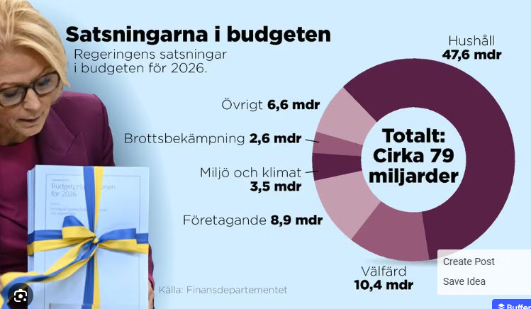

Quiz: Budgetpropositionen 2026
Effekter på kommuner, kultur, fritid och socialtjänst
Sida 1 av 5
Effekter på kommuner, kultur, fritid och socialtjänst

Budgetpropositionen 2026 - Test dina kunskaper!
Utmaning med AI-verktyg: Detta quiz skapades med hjälp av flera olika generativa AI-modeller på grund av tekniska begränsningar. Under utvecklingen uppstod upprepade problem med Claude 4.5 Sonnet som kontinuerligt nådde sin maximala konversationslängd, vilket avbröt arbetsflödet.
Lärdomar: Att arbeta med flera olika AI-modeller visade sig vara både utmanande och berikande. Varje modell hade sina styrkor - Claude för kodstruktur, Mistral för strukturerad analys av policy-dokument, och Grok för bred översikt. Detta illustrerar både potentialen och begränsningarna med nuvarande AI-verktyg i kunskapsskapande processer.
Struktur: Allt i en HTML-fil (HTML5, CSS och JavaScript inbäddat). Återanvänder samma teknik från quiz.html men utan att ändra den filen.
Uppdatering 2025-11-07: Skapad ny index.html med quiz om budgetpropositionen 2026, med fokus på effekter för kommuner.
Quiz: Budgetpropositionen 2026 - Effekter på kommuner, kultur, fritid och socialtjänst
Frågor och fördjupade förklaringar baserade på: